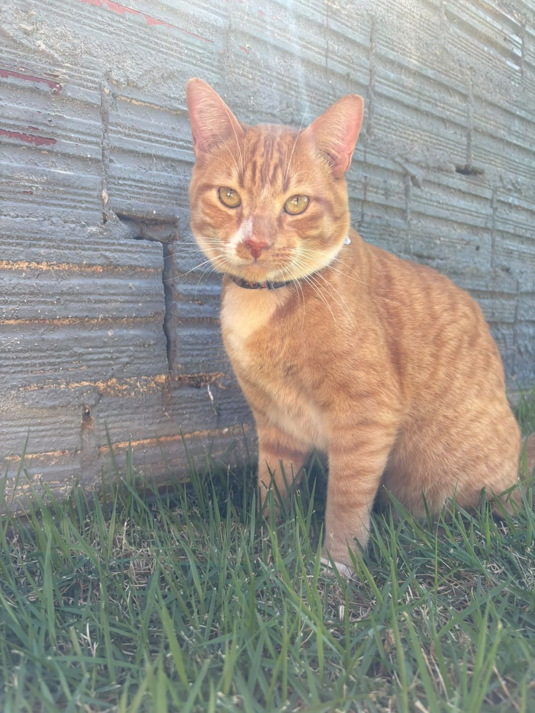
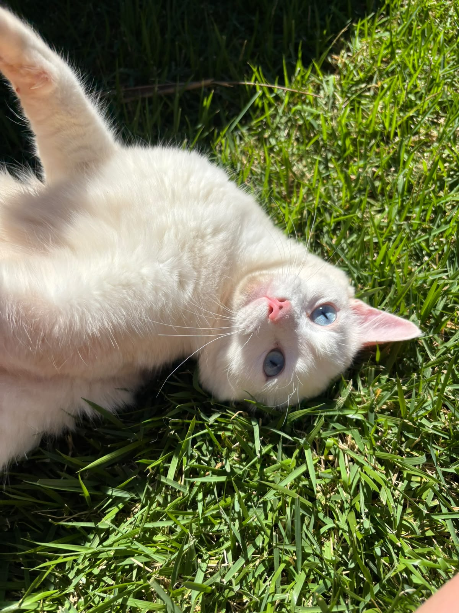
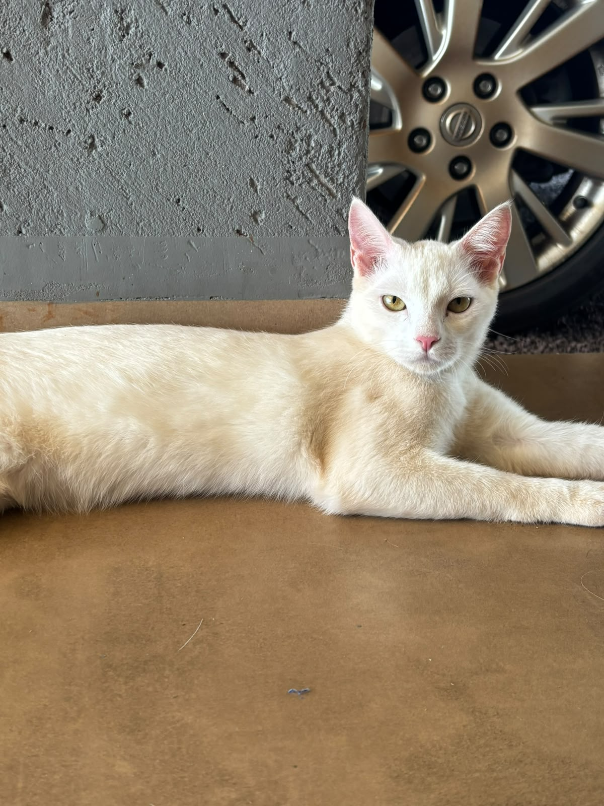

Caroço

Caroço é um gatinho tranquilo que adora ficar perto dos clientes enquanto eles tomam café.
A nossa cafeteria foi criada para unir duas coisas que muita gente ama: café e gatos. A ideia é oferecer um ambiente aconchegante, tranquilo e divertido, onde os clientes podem aproveitar cafés, doces e lanches enquanto passam um tempo na companhia dos gatinhos.
O espaço foi pensado para proporcionar uma experiência diferente de uma cafeteria tradicional, com uma decoração inspirada no universo felino e áreas confortáveis para relaxar, conversar com amigos ou simplesmente aproveitar o momento.
Além de servir produtos de qualidade, a cafeteria também busca incentivar o cuidado e o respeito pelos animais, criando um ambiente seguro tanto para os visitantes quanto para os gatos.
Mais do que tomar um café, queremos que cada visita seja um momento especial, cheio de carinho, boas lembranças e, claro, muitos ronronados. 🐾☕

Caroço é um gatinho tranquilo que adora ficar perto dos clientes enquanto eles tomam café.

Marie é carinhosa e adora ganhar carinho de todos na cafeteria.

Suspiro é brincalhão e está sempre procurando alguém para brincar.
Café expresso, cappuccino, café com leite e chocolate quente.
Cupcakes, cookies, bolos e outros doces especiais.
Sanduíches e opções para acompanhar seu café.
Quer conhecer mais sobre nossa cafeteria?
Assista ao vídeo no YouTube📍 Rua dos Gatinhos, 123 - Centro
📞 (45) 99999-9999
📧 contato@catcafe.com
🕐 Segunda a sábado, das 9h às 19h